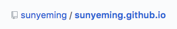
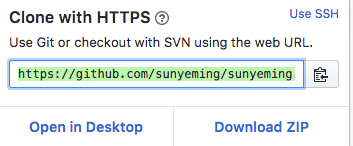

以前曾经用Github搭建过Hexo博客，但是由于我在做持续集成的时候出错，博客没有了。这篇博客作为一个新的开端。Hexo官网
下面就以我安装Hexo博客的过程做个记录。
环境配置
1.Node.js
去Node.js官网下载对应的版本。安装即可。
2.Git
Mac自带Git
安装Hexo
3.终端中输入如下命令
$ sudo npm install -g hexo
在这个步骤时，我遇到了一些问题，问题如下：提示删除以前安装的Hexo。我以前安装过Hexo，原来如此。
使用以下命令：
$ cd /usr/local/bin
$ sudo rm ./hexo
$ npm config set user 0
$ npm config set unsafe-perm true
$ sudo npm install -g hexo
初始化
在终端上cd到一个目录，执行hexo init 命令：
$ hexo init blog
或者自己创建一个文件夹 执行hexo init 命令：
$ hexo init
在你的文件夹目录中，安装npm
$ npm install
安装成功后，执行以下命令开启服务器：
$ hexo s
在浏览器上打开网址http://localhost:4000
关联GitHub
登录Github账号，如果没有注册一个账号，新建一个仓库。名字必须是以下格式:
用户名.github.io

用你喜欢的编辑器打开根目录下的_config.yml，在文件的末尾修改如下：
deploy:
type: git
repository: https://github.com/sunyeming/sunyeming.github.io.git
branch: master
上面的repository地址替换成如下这个地方的地址：

在_config.yml 文件中的标签后的冒号：后都要有空格
在终端执行如下命令就可以在看到效果了：
$ hexo g
$ hexo d
若执行命令hexo deploy仍然报错：无法连接git或找不到git，则执行如下命令来安装hexo-deployer-git：
$ npm install hexo-deployer-git --save
如果未关联Github，则执行hexo d命令时终端会提示你输入Github的用户名和密码
Username for 'https://github.com':
Password for 'https://github.com':
成功后，在浏览器中打开网址http://你的用户名.github.io
至此，Hexo就安装好了